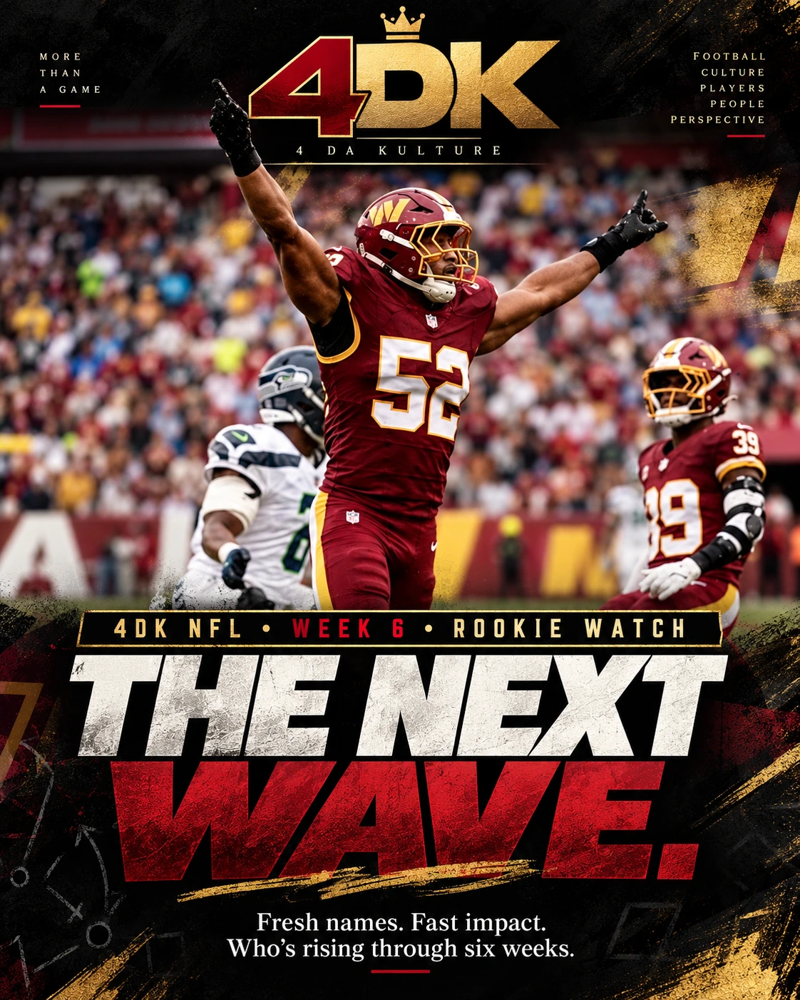

01 / NBANIGHTCAP EXPLORER
Search published nightly reports, highlights and game-of-the-night picks.
EXPLORE NIGHTCAP →Browse original 4DK analysis in new ways. Every archive remains on the record.
Search published nightly reports, highlights and game-of-the-night picks.
EXPLORE NIGHTCAP →
Choose a team and explore linked coverage, weekly watches and the archive.
ENTER NFL HQ →
The published issues, authentic album covers, and deep track-by-track write-ups.
OPEN THE SHELF →
One published opening file. A roadmap to the chapters still to be written.
EXPLORE THE FILES →
The established Top 50, our original essays, and side-by-side player debates.
ENTER HEAD-TO-HEAD →